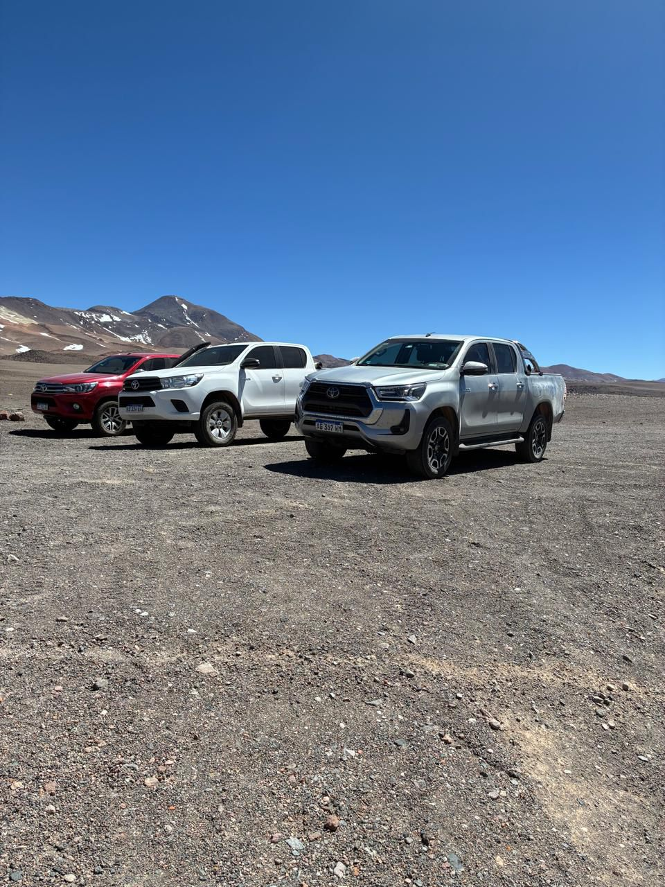

The Madness Expeditions · Argentina
The SeisMiles
Land of Giants


Within the Andes mountain range, across the provinces of Salta, Catamarca and La Rioja, lies this collection of peaks and volcanoes that challenge everyone who loves mountaineering and adventure tourism.


